CMP08 — Coding Ke Liye Laptop Kaise Chunein?
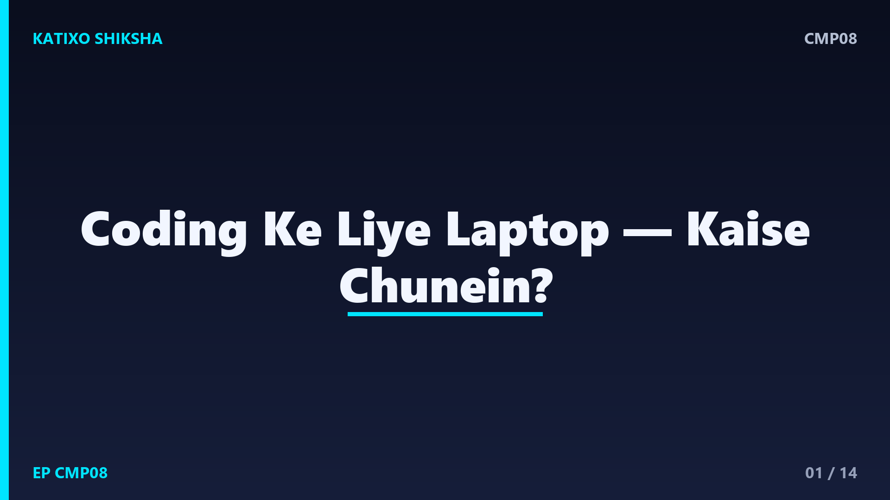
Slide 1दोस्तों, अगर आप या आपका बच्चा coding सीख रहा है, programming कर रहा है, या college में computer science पढ़ रहा है, तो एक बड़ा सवाल आता है — कौनसा laptop लें? दुकानदार बड़े-बड़े शब्द बोलकर confuse कर देता है — RAM, processor, SSD, और दाम आसमान पर। फिर सही laptop कैसे चुनें, बिना ज़रूरत से ज़्यादा ख़र्च किए? Katixo KhojLab की इस episode में हम coding और students के लिए laptop चुनने की पूरी guide आसान भाषा में समझेंगे — कौनसी चीज़ ज़रूरी है, कौनसी नहीं, और किस बजट में क्या मिलता है।
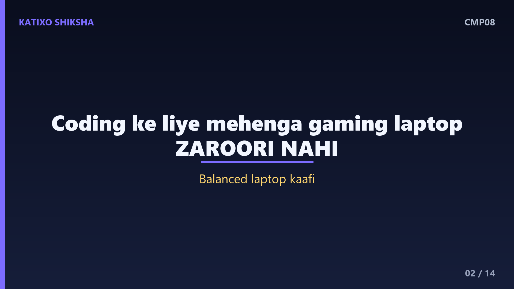
Slide 2सबसे पहले एक मिथक तोड़ते हैं — coding के लिए बहुत महँगा, gaming वाला laptop ज़रूरी नहीं है. Coding में ज़्यादातर काम code लिखना, चलाना, और browser में पढ़ना-खोजना होता है, जिसके लिए एक संतुलित, ठीक-ठाक laptop काफ़ी है। महँगे gaming laptops में जो भारी graphics card होता है, वो coding में अक्सर ज़रूरत से ज़्यादा होता है। तो सबसे पहले ये समझ लो — coding के लिए सही laptop का मतलब महँगा नहीं, बल्कि सही चीज़ों में मज़बूत laptop होता है।
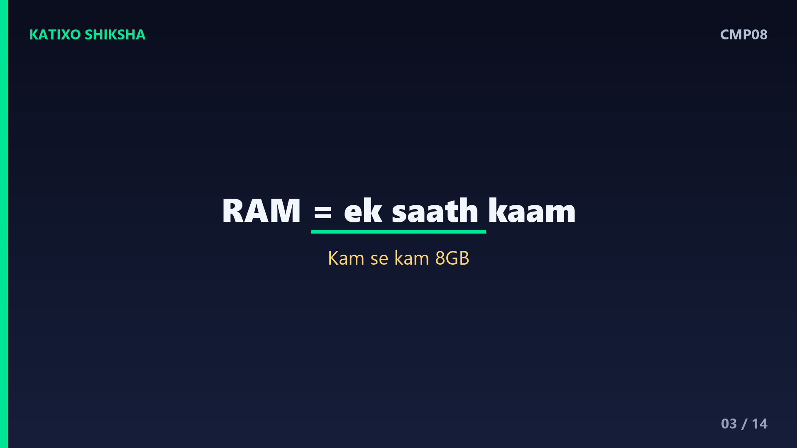
Slide 3अब सबसे ज़रूरी चीज़ — RAM, यानी laptop की कामकाजी memory. RAM जितनी ज़्यादा, उतने काम एक साथ बिना अटके चलते हैं — जैसे code editor, browser के कई tabs, और कोई tool, सब एक साथ। coding के लिए कम से कम आठ GB RAM ज़रूरी मानी जाती है, और अगर बजट इजाज़त दे तो सोलह GB लेना भविष्य के लिए कहीं बेहतर है। कम RAM वाला laptop सस्ता तो लगता है, पर भारी काम पर अटकता है, और यही सबसे बड़ी निराशा देता है। इसलिए RAM पर समझौता सबसे आख़िर में करना।
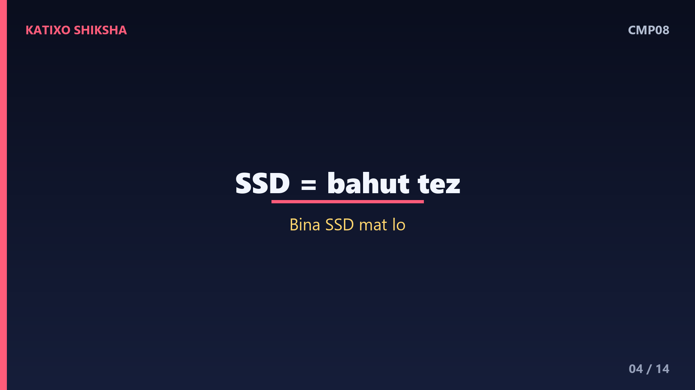
Slide 4अब दूसरी सबसे ज़रूरी चीज़ — SSD, यानी storage का तेज़ तरीक़ा. पुराने laptops में hard disk यानी HDD होती थी, जो धीमी थी। आजकल SSD आती है, जो laptop को कई गुना तेज़ कर देती है — laptop जल्दी चालू होता है, software फटाफट खुलते हैं, और code तेज़ी से चलता है। coding के लिए SSD लगभग ज़रूरी है, HDD वाला सस्ता laptop आपको रोज़ खिझाएगा। कम से कम दो सौ छप्पन GB SSD ठीक है, और पाँच सौ बारह GB मिले तो और बेहतर, ताकि जगह की कमी ना पड़े।
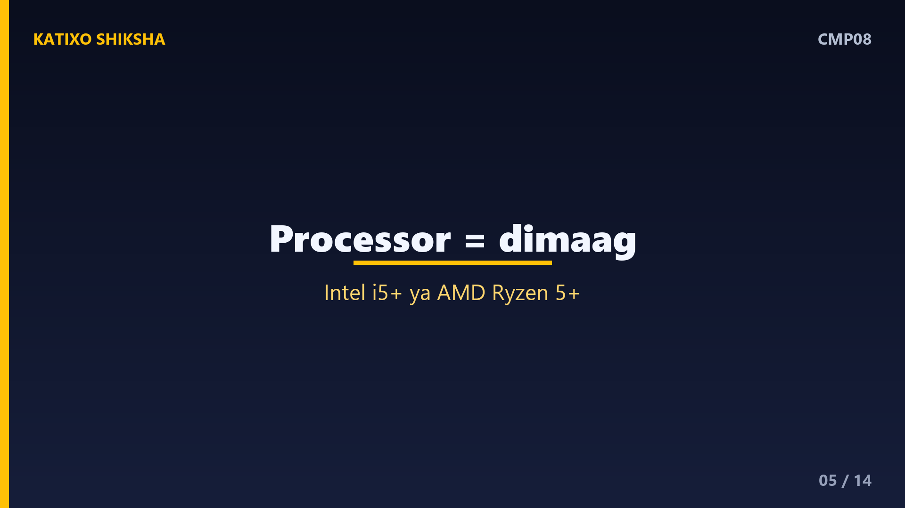
Slide 5अब तीसरी ज़रूरी चीज़ — processor, यानी laptop का दिमाग़. ये जितना अच्छा, laptop उतना तेज़ सोचता और काम करता है। coding के लिए आपको बहुत top-end processor की ज़रूरत नहीं, एक अच्छा mid-range processor काफ़ी है। आम भाषा में, Intel का Core i5 या उससे ऊपर, या AMD का Ryzen 5 या ऊपर, coding के लिए बढ़िया माने जाते हैं। बहुत पुराना या सबसे सस्ता, कमज़ोर processor मत लो, क्योंकि बाद में बदला नहीं जा सकता। processor में थोड़ा अच्छा लेना लंबे समय तक काम आता है।
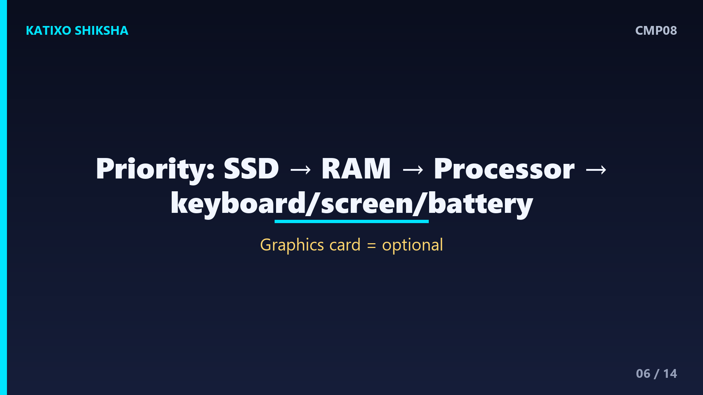
Slide 6अब प्राथमिकता साफ़ कर देते हैं, ताकि पैसा सही जगह लगे. coding के लिए सबसे पहले SSD, फिर पर्याप्त RAM, फिर ठीक-ठाक processor — यही तीन सबसे ज़रूरी हैं। इनके बाद आती हैं आराम वाली चीज़ें — अच्छा keyboard, ठीक-ठाक screen, और लंबी battery। coding में घंटों typing होती है, इसलिए आरामदेह keyboard बहुत मायने रखता है। और भारी graphics card जैसी चीज़ों पर पैसा तभी लगाओ जब आप gaming या video editing भी करते हो — सिर्फ़ coding के लिए ये ज़रूरी नहीं।
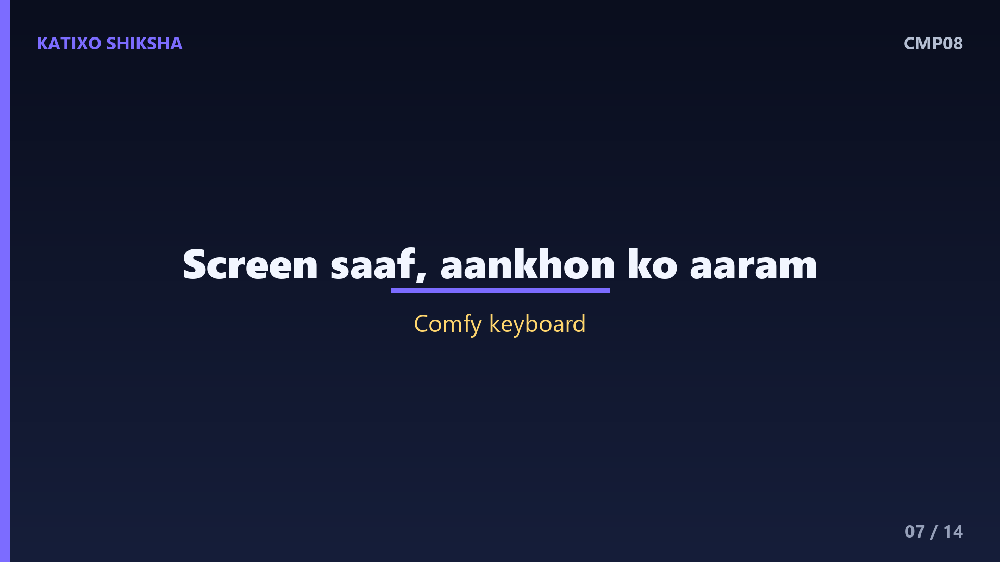
Slide 7अब screen, keyboard और battery की बात, जो रोज़ के आराम से जुड़ी हैं. screen बहुत बड़ी होने की ज़रूरत नहीं, पर साफ़ और आँखों को आराम देने वाली होनी चाहिए, क्योंकि coding में घंटों screen देखनी पड़ती है। keyboard आरामदेह हो, ताकि लंबी typing थकाए नहीं। और battery जितनी लंबी चले, उतना अच्छा, ख़ासकर students के लिए जो college या library में बिना charger के काम करते हैं। ये चीज़ें specs में छोटी लगती हैं, पर रोज़ के इस्तेमाल में बड़ा फ़र्क़ डालती हैं।
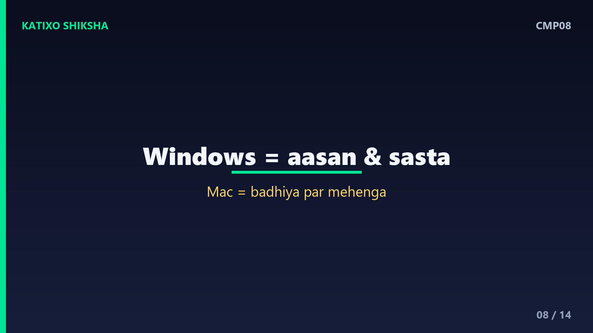
Slide 8अब operating system की बात — Windows, Mac, या Linux. ज़्यादातर students के लिए Windows वाला laptop सबसे आसान और सस्ता शुरुआती विकल्प है, और लगभग हर coding काम के लिए ठीक है। Apple का MacBook बढ़िया और टिकाऊ होता है, पर काफ़ी महँगा, और हर किसी के बजट में नहीं आता। Linux मुफ़्त है और कई programmers को पसंद है, और इसे आप किसी भी Windows laptop पर भी डाल सकते हो। शुरुआत के लिए Windows या Linux वाला किफ़ायती laptop अक्सर सबसे समझदारी भरा रहता है।
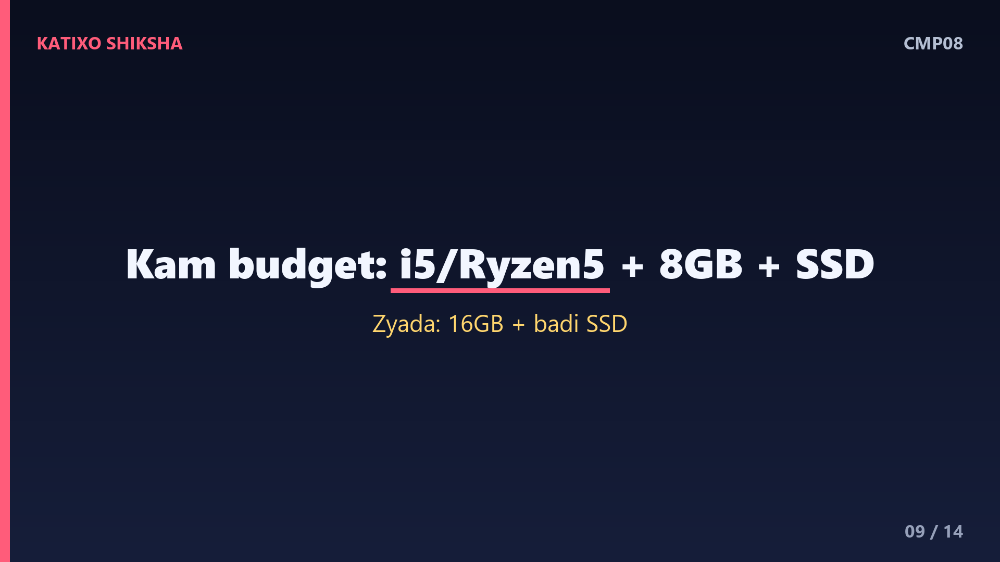
Slide 9अब बजट के हिसाब से समझते हैं, असली ज़मीनी बात. कम बजट में — एक i5 या Ryzen 5, आठ GB RAM और SSD वाला laptop ढूँढो, यही coding शुरू करने के लिए बढ़िया sweet spot है। थोड़ा ज़्यादा बजट हो — तो सोलह GB RAM और बड़ी SSD ले लो, जो कई सालों तक साथ देगी। बहुत कम बजट में, अगर ज़रूरत पड़े, तो एक अच्छा second-hand या refurbished laptop भी समझदारी भरा सौदा हो सकता है, बशर्ते उसमें SSD और ठीक RAM हो। दिखावे से ज़्यादा specs देखो।
Slide 10अब कुछ आम ग़लतियाँ, जिनसे बचना ज़रूरी है. पहली — सबसे सस्ता laptop सिर्फ़ दाम देखकर ख़रीद लेना, जिसमें ना SSD हो ना पर्याप्त RAM; ये कुछ ही महीनों में अटकने लगता है। दूसरी — सिर्फ़ दिखावे या ब्रांड के चक्कर में ज़रूरत से ज़्यादा महँगा gaming laptop लेना। तीसरी — दुकानदार की बड़ी-बड़ी बातों में आकर बेकार के extra features के पैसे देना। याद रखो — coding के लिए सही laptop वो है जिसमें ज़रूरी चीज़ें मज़बूत हों, ना कि सबसे महँगा या सबसे सस्ता।
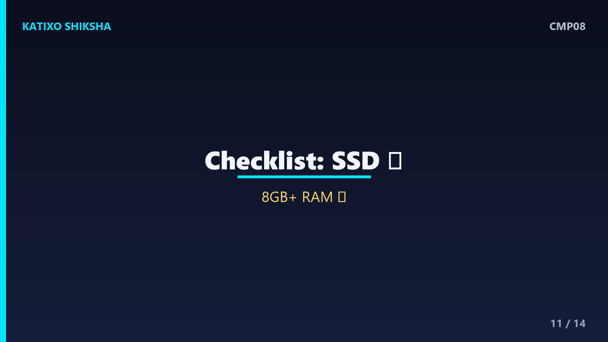
Slide 11अब एक छोटा सा checklist, ख़रीदने से ठीक पहले दोहरा लो. एक — SSD है या नहीं, बिना SSD मत लो। दो — RAM कम से कम आठ GB, हो सके तो सोलह। तीन — processor i5, Ryzen 5 या उससे ऊपर। चार — keyboard और screen आरामदेह हों। पाँच — battery ठीक-ठाक चले। छह — बजट में फ़िट हो, और बेकार के features के पैसे ना दे रहे हों। अगर ये सब tick हो जाएँ, तो वो laptop coding के लिए आपके लिए बढ़िया है, चाहे उसका दाम कुछ भी हो।
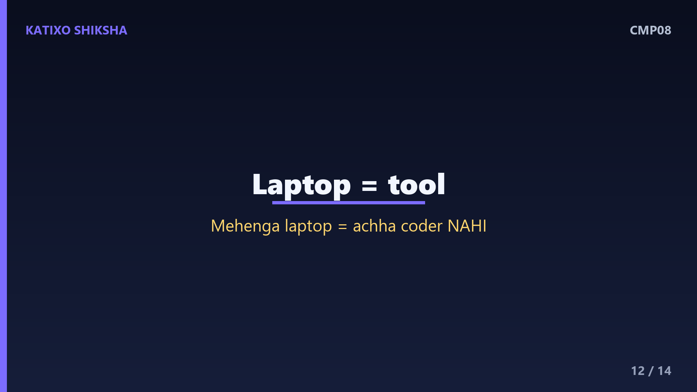
Slide 12एक समझदारी की बात — laptop एक tool है, असली ताक़त आपकी सीख है. बहुत महँगा laptop आपको अच्छा coder नहीं बनाता, और एक किफ़ायती सही laptop आपको रोकता भी नहीं। दुनिया के कई बड़े programmers ने साधारण laptops पर सीखना शुरू किया। इसलिए अपने बजट में सही चीज़ों वाला laptop लो, और बाक़ी ऊर्जा सीखने में लगाओ। जब आपकी skill और कमाई बढ़े, तब बेहतर laptop लेना आसान होगा। पहला laptop perfect नहीं, बस काम लायक और भरोसेमंद होना चाहिए।
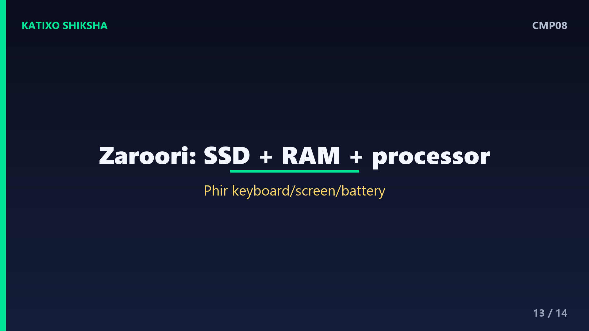
Slide 13एक quick recap. coding के लिए सबसे ज़रूरी — SSD, फिर कम से कम आठ GB RAM, फिर i5 या Ryzen 5 जैसा ठीक processor। इसके बाद आरामदेह keyboard, साफ़ screen और अच्छी battery। महँगा gaming laptop ज़रूरी नहीं, और सबसे सस्ता बिना SSD वाला घातक। बजट में sweet spot ढूँढो, और ज़रूरत हो तो अच्छा refurbished भी ठीक है। याद रखो — सही laptop वो है जो ज़रूरी चीज़ों में मज़बूत हो और आपके बजट में फ़िट हो, ना कि सबसे महँगा दिखावा।
Slide 14तो दोस्तों, अब coding के लिए laptop चुनना आपके लिए मुश्किल नहीं रहा, और अगली बार दुकान पर या online आप बिना बहके, समझदारी से सही laptop चुन पाओगे। याद रखो — सबसे ज़रूरी है SSD, अच्छी RAM और ठीक processor, बाक़ी सब बाद में। अगर ये guide काम आई तो Katixo KhojLab subscribe karein, घंटी दबाएँ, और हर उस student और parent के साथ share करें जो laptop लेने की सोच रहा है। मिलते हैं अगली episode में, एक और काम की जानकारी के साथ।